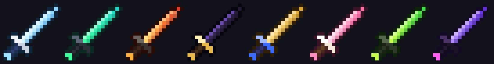
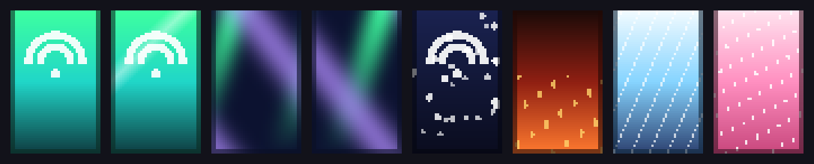
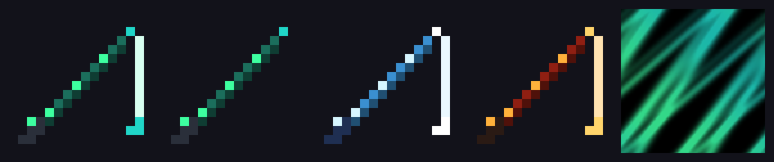

site/
Сайт-витрина
Главная с живым HUD-превью, каталог с поиском и фильтрами, страница товара, конструктор HUD с перетаскиванием и экспортом в JSON, кабинет, админка, changelog.
Кейс · 2026
Магазин визуальных дополнений для Minecraft: сайт-витрина, Fabric-мод с ~50 визуальными функциями и загрузчик, который ставит всё одной кнопкой.
Сделать магазин визуалов для Minecraft в премиальном стиле — не «кубический» детский сайт, а игровую платформу уровня киберспортивных порталов. И сделать сами визуалы: то, что игрок скачивает и ставит.
Главная с живым HUD-превью, каталог с поиском и фильтрами, страница товара, конструктор HUD с перетаскиванием и экспортом в JSON, кабинет, админка, changelog.
HUD с меню на правый Shift, скины мечей и плащей, эффекты боя, стеклянный интерфейс, темы неба, буст FPS.
Одна кнопка: Fabric, Fabric API, мод и оптимизация, профиль в официальном лаунчере. Java встроена, контрольные суммы проверяются.
Встраивание в отрисовку игры через Mixin без поломки ванильных деталей (модель игрока в инвентаре, прогресс печи); анимированные плащи без встроенной анимации у текстур сущностей; сборка .exe без установленной у игрока Java.



Проект собран вместе с ИИ-ассистентом Claude. Идея, направление, выбор функций и тестирование в игре — мои; код, текстуры и сборка — совместная работа.